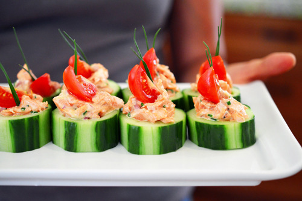

Spicy Salmon Cucumber Bites

Description
Want to impress your pals with an elegant yet simple hors d’oeuvre?
Look no further than these spicy salmon cucumber bites! If you’ve
already got some cooked salmon and mayo in your fridge, you can whip
these omega-3-fatty-acid-packed appetizers in a jiffy.
Ingredients:
- 1/4 cup mayonnaise
- 1/4 teaspoon smoked paprika
- 1/4 teaspoon Tabasco
- 1/2 pound cooked salmon
- 1 tablespoon miced shallots
- 1 tablespoon chopped chives
- Kosher salt, to taste
- Pepper, to taste
- 1 English cucmber, peeled and in 3/4-inch thick slices
- 4 cherry tomatoes, quartered
- 1 bunch chive sprigs (garnish)
Steps:
- Combine mayo, paprika, and Tabasco in small bowl and mix thoroughly
- Flake the salmon into bite-sized pieces
- Add the salmon, shallots, chives, salt, pepper in a bowl and gently mix in the mayo
- Scoop out the center of each cucumber slice
- Divide the salmon mixture up into each slice
- Top each slice with a cheery tomato slice and chive tops